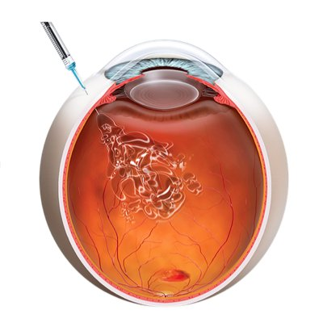
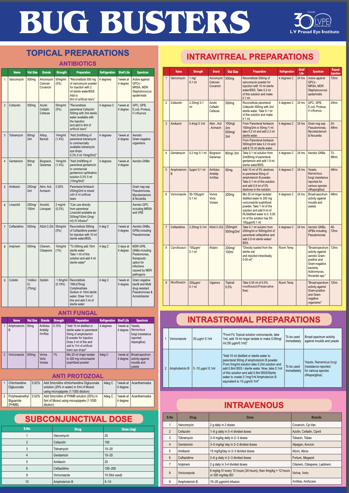

For: PG residents
Last updated: November 2026
Safety first: doses below are standard published starting points for adults. Always check units (mg vs µg) twice, confirm against your hospital protocol or pharmacist, and use preservative-free preparations for anything injected into the eye.
| Drug | Dose | Notes |
|---|---|---|
| Vancomycin | 1 mg / 0.1 mL | Gram-positive cover. For treatment of endophthalmitis, not prophylaxis (see the HORV warning below). |
| Ceftazidime | 2.25 mg / 0.1 mL | Gram-negative cover. Inject with a separate syringe and needle from vancomycin (they precipitate when mixed). |
| Amikacin | 0.4 mg (400 µg) / 0.1 mL | Alternative Gram-negative cover, for example with beta-lactam allergy. Risk of macular infarction. |
| Gentamicin | 0.2 mg (200 µg) / 0.1 mL | Largely abandoned because of macular infarction. Prefer ceftazidime or amikacin. |
| Drug | Dose | Notes |
|---|---|---|
| Voriconazole | 50–100 µg / 0.1 mL (100 µg commonly used) | Broad spectrum, including Aspergillus and Fusarium |
| Amphotericin B | 5–10 µg / 0.1 mL | Retinal toxicity at higher doses |
| Drug | Dose | Notes |
|---|---|---|
| Ganciclovir | 2 mg / 0.1 mL (standard). Low-dose regimens of 200–400 µg have also been reported. | Note the units: milligrams for the standard dose, micrograms for low-dose regimens |
| Foscarnet | 2.4 mg / 0.1 mL (1.2 mg / 0.05 mL) | Often repeated once or twice weekly alongside systemic antivirals |
| Cidofovir | 20 µg / 0.1 mL | Rarely used now because of hypotony and uveitis |
| Drug | Dose |
|---|---|
| Dexamethasone (solution) | 400 µg / 0.1 mL |
| Triamcinolone acetonide (preservative-free) | 1–4 mg / 0.1 mL (4 mg most common) |
| Dexamethasone implant (Ozurdex) | 0.7 mg biodegradable implant. See intravitreal implants. |
| Drug | Dose | Notes |
|---|---|---|
| Clindamycin | 1 mg / 0.1 mL | Ocular toxoplasmosis (retinochoroiditis), often with intravitreal dexamethasone 400 µg; an alternative to classic oral therapy |
| Methotrexate | 400 µg / 0.1 mL | Primary vitreoretinal lymphoma (induction, then tapering frequency); also used off-label in uveitis and PVR |
| Alteplase (tPA) | 25–50 µg / 0.05–0.1 mL | Submacular haemorrhage displacement, usually with an expansile gas bubble (SF6 or C3F8) and face-down positioning; given within days of the bleed |
| Pegcetacoplan (Syfovre) | 15 mg / 0.1 mL | Geographic atrophy (complement C3 inhibitor), monthly or every other month; watch for intraocular inflammation and retinal vasculitis, and new neovascular AMD. See GA treatments |
| Avacincaptad pegol (Izervay) | 2 mg / 0.1 mL | Geographic atrophy (complement C5 inhibitor), monthly |
| Fluocinolone acetonide implants | 0.19 mg (Iluvien, DME); 0.18 mg (Yutiq, posterior uveitis) | Non-biodegradable, about 3 years; raised IOP and cataract. See intravitreal implants |
| Triamcinolone for visualisation (vitrectomy) | 40 mg/mL suspension, small volume (0.1–0.3 mL), most washed out | Stains vitreous and posterior hyaloid; see surgical dyes and triamcinolone |
| Drug | Dose | Notes |
|---|---|---|
| Bevacizumab (Avastin) | 1.25 mg / 0.05 mL | Off-label, repackaged from 100 mg/4 mL or 400 mg/16 mL vials (25 mg/mL). Aseptic aliquoting is essential. |
| Ranibizumab (Lucentis and biosimilars) | 0.5 mg / 0.05 mL (0.3 mg in some DME labels; 0.2 mg in ROP) | Several biosimilars are available, including in India |
| Aflibercept (Eylea) | 2 mg / 0.05 mL | Standard dose |
| Aflibercept 8 mg (Eylea HD) | 8 mg / 0.07 mL | High-dose formulation allowing longer intervals |
| Faricimab (Vabysmo) | 6 mg / 0.05 mL | Bispecific: VEGF-A and angiopoietin-2 |
| Brolucizumab (Beovu) | 6 mg / 0.05 mL | Risk of retinal vasculitis and vascular occlusion, so use is now limited |
| Pegaptanib (Macugen) | 0.3 mg / 0.09 mL | Historical only: discontinued |
Related: the current anti-VEGF landscape and treat-and-extend regimens.
Below is a dosage chart prepared by LVPEI, also available as a PDF.

Download the LVPEI dosages chart (PDF)
Used as an add-on for deep or recalcitrant keratitis that is not responding to intensive topical treatment, to put the drug directly where the organism is. Most of the evidence is for fungal keratitis; for bacterial keratitis it is limited to case reports and small series.
| Drug | Dose | Use and notes |
|---|---|---|
| Antifungals | ||
| Voriconazole | 50 µg / 0.1 mL | The most used agent (Aspergillus, Fusarium). Prepared from the 200 mg vial; given as a barrage of injections around the infiltrate, often repeated |
| Amphotericin B | 5–10 µg / 0.1 mL (2.5 µg / 0.1 mL also reported) | Candida and filamentous fungi. Corneal toxicity above about 20 µg / 0.1 mL in animal studies; more deep vascularisation after healing in one trial |
| Natamycin (water-soluble formulation) | 10 µg / 0.1 mL | Recalcitrant filamentous keratitis; needs a specially prepared soluble formulation (ordinary natamycin suspension cannot be injected) |
| Fluconazole | 0.2% (200 µg / 0.1 mL, the ready-made IV solution) | Mainly yeasts; reported with lamellar keratectomy and in small trials |
| Antibiotics (case reports and small series only) | ||
| Cefuroxime | 1 mg / 0.1 mL | Recalcitrant bacterial keratitis and infectious crystalline keratopathy (streptococci) |
| Moxifloxacin (preservative-free 0.5%) | No agreed dose: small volumes of the 0.5% solution have been used | Recalcitrant and polymicrobial bacterial keratitis; a randomised trial is under way |
Mitomycin C is not injected: it is applied topically, typically 0.02% for about 15–30 seconds after surface ablation to reduce haze, or with a sponge in glaucoma and pterygium surgery.
| Drug | Dose | Notes |
|---|---|---|
| Cefuroxime | 1 mg / 0.1 mL | The ESCRS endophthalmitis study regimen |
| Moxifloxacin | Commonly 100–500 µg in 0.1 mL; 0.1 mL of undiluted preservative-free 0.5% gives 500 µg | Regimens and dilutions vary, so follow one protocol consistently |
| Cefazolin | 1 mg / 0.1 mL | |
| Amphotericin B | 5–10 µg / 0.1 mL | For fungal infection, not routine use |
| Adrenaline (epinephrine) | 1:10,000 (0.1 mL of 1:1000 diluted with 0.9 mL) | Preservative-free and bisulfite-free only. For pupil dilation and floppy iris. |
| Acetylcholine 1% or carbachol 0.01% | As per the product | Intracameral miotics |
Do not use vancomycin for prophylaxis inside the eye. Intracameral vancomycin and vancomycin in the irrigating fluid have been linked to haemorrhagic occlusive retinal vasculitis (HORV), a rare but blinding reaction, sometimes in both eyes. The FDA and ASCRS/ASRS advise against prophylactic intraocular vancomycin. Gentamicin in the irrigating fluid has also been abandoned because of retinal toxicity.
| Drug | Dose |
|---|---|
| Vancomycin | 25 mg / 0.5 mL |
| Ceftazidime | 100 mg / 0.5 mL |
| Amikacin | 25 mg / 0.5 mL |
| Cefazolin | 100 mg / 0.5 mL |
| Gentamicin | 20 mg / 0.5 mL |
| Dexamethasone | 6 mg / 0.25 mL |
See also types of ocular injections, endophthalmitis management and microbial keratitis work-up.
| Agent | Pure (expansile) use | Non-expansile mix | Lasts about |
|---|---|---|---|
| SF6 | Pneumatic retinopexy 0.3–0.5 mL; submacular haemorrhage displacement | 20% | 2 weeks |
| C2F6 | Pneumatic retinopexy 0.3–0.4 mL (less used) | 16% | 4–5 weeks |
| C3F8 | Pneumatic retinopexy 0.3 mL | 12–14% | 6–8 weeks |
| Silicone oil | 1000 or 5000 cSt; long-term tamponade, removed later | — | Until removed |
| Perfluorocarbon liquid (heavy liquid) | Intra-operative only (flattening the retina, giant tears) | — | Removed at the end of surgery |
No flying, high-altitude travel or nitrous oxide anaesthesia while gas is in the eye. Work out concentrations and dates with the intraocular gas calculator.
| Drug | Dose | Notes |
|---|---|---|
| Lidocaine 1% (preservative-free) | 0.1–0.5 mL | Intracameral anaesthesia with topical drops in phaco |
| Tropicamide 0.02% + phenylephrine 0.31% + lidocaine 1% (Mydrane) | 0.2 mL at the start of surgery | Intracameral mydriasis and anaesthesia |
| Phenylephrine 1% + ketorolac 0.3% (Omidria) | 4 mL added to 500 mL irrigating solution | Maintains mydriasis, reduces pain; useful in floppy iris |
| Trypan blue 0.06% | Small amount over the capsule (under air or viscoelastic) | Capsule staining in white or mature cataract |
| Alteplase (tPA) | 10–25 µg / 0.1 mL | Dissolves dense fibrin in the anterior chamber (for example after surgery or in fibrinous uveitis); avoid soon after surgery if bleeding risk |
| Voriconazole | 50–100 µg / 0.1 mL | Fungal keratitis with endothelial plaque or hypopyon, as an add-on |
| SF6 20% or air | Fill the anterior chamber, then partial release | Graft attachment in DMEK and DSAEK; Descemet detachment (descemetopexy) |
| Drug | Dose | Use and notes |
|---|---|---|
| Triamcinolone acetonide (posterior sub-Tenon) | 20–40 mg (0.5–1 mL of 40 mg/mL) | Uveitic or post-operative macular oedema, intermediate uveitis; watch IOP |
| Triamcinolone acetonide (intralesional) | 0.1–0.2 mL of 10–40 mg/mL | Chalazion that has not settled; risk of skin depigmentation in dark skin, so use the lower strength and inject through the conjunctiva |
| Methylprednisolone acetate (sub-Tenon or orbital floor) | 40 mg | Alternative depot steroid |
| 5-fluorouracil (subconjunctival) | 5 mg / 0.1 mL (from 50 mg/mL), away from the bleb | Bleb needling and failing blebs; keep off the cornea |
| Mitomycin C (trabeculectomy) | 0.2–0.4 mg/mL on sponges for 1–3 minutes, or 0.1 mL of 0.2–0.4 mg/mL injected under Tenon | Antifibrotic; thin avascular blebs and leaks with higher doses |
| Interferon alfa-2b (OSSN) | 3 million IU / 0.5 mL perilesional, or 1 million IU/mL drops four times a day | Ocular surface squamous neoplasia, immunotherapy; flu-like symptoms with injections |
| 5-fluorouracil 1% or mitomycin C 0.02–0.04% (OSSN drops) | 5-FU: four times a day for 1 week, then 3 weeks off. MMC: four times a day in 1-week cycles | Topical chemotherapy for OSSN; punctal plugs with MMC; watch for limbal stem cell damage |
| Bevacizumab (subconjunctival) | 1.25–2.5 mg | Corneal neovascularisation before keratoplasty (off-label) |
| Botulinum toxin A | Blepharospasm 1.25–2.5 U per site; strabismus 1.25–5 U per muscle | See reconstitution and units per site |
| Block | Usual volume and drugs | Notes |
|---|---|---|
| Peribulbar | 5–8 mL of lidocaine 2% and bupivacaine 0.5% (1:1), often with hyaluronidase | Compression after the block; check akinesia |
| Retrobulbar | 3–4 mL of the same mixture | Higher risk of globe perforation, brainstem anaesthesia and retrobulbar haemorrhage |
| Sub-Tenon | 3–5 mL of lidocaine 2% through a blunt cannula | Few serious complications; chemosis and subconjunctival haemorrhage common |
| Topical plus intracameral | Proparacaine or tetracaine drops, plus intracameral lidocaine 1% 0.1–0.5 mL | For co-operative patients in phaco |
Complications and management: ocular anaesthesia. Maximum doses: lidocaine 3 mg/kg (7 mg/kg with adrenaline), bupivacaine 2 mg/kg.
📘 Want the exam-ready deep dive? This topic, and much more is covered in Ophthalmology Explorer (A High-Yield Clinical Reference for Ophthalmology Residents, Fellows & Board Exams) — available on Kindle. See all my books.
How to cite this page
Patel D. Intravitreal, Intracameral, Intrastromal & Subconjunctival Drug Doses. RPC Rounds (Sadbhaav Eye Clinic). Updated November 2026. Available at: https://www.sadbhaavclinic.com/ivdosage.html. Accessed [date].
Experiencing symptoms like these? Learn about our Eye Department or book a consultation with Dr. Dhaval Patel.